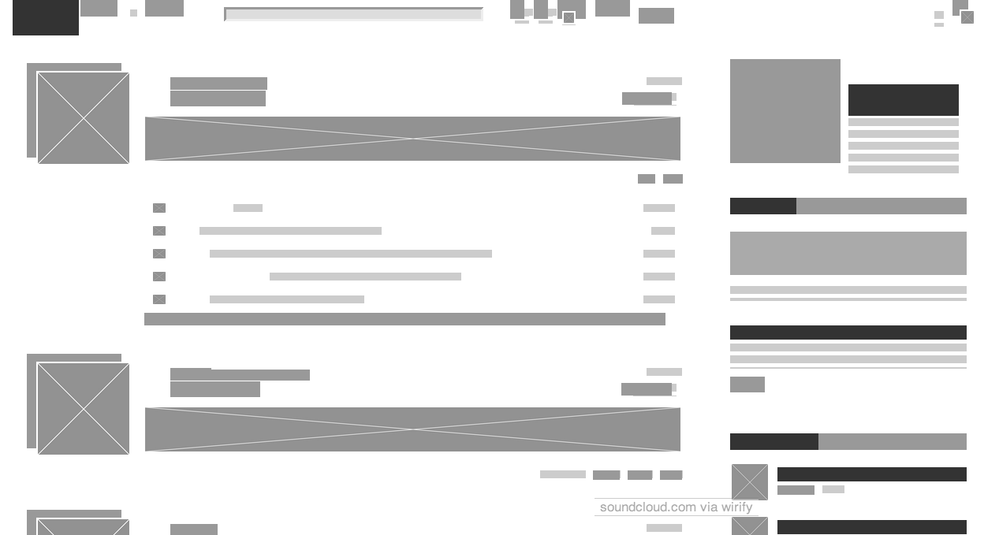
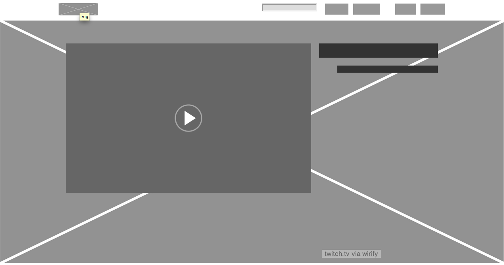

Site 1: Soundcloud.com
Soundcloud is solving how to allow a user to present their audio files in an easy to find and navigate manner, as well as allowing listeners to find audio files and navigate the site easily. Visual challenges of the site include how to display multiple sounds, their information, and a user's personal information all in one screen, how to facilitate finding one's way back to or away from a certain page, and how to organize a user's profile, including their sounds, comments, artist information, related artists, etc.
Site 2: Twitch.tv
Twitch is solving the problem of how to allow a user to stream live video of themself playing a game while having access to a chat with viewers, and is also solving how to allow a user to find streamers playing games that interest them easily. Visual challenges include how to fit a video screen, chat log, and site sidebar in one screen (solved neatly by a folding sidebar and chat log) and how to ease navigation of games or streamers.
Site 3: Reddit.com
What problem is the web page solving? What visual challenges are there? Reddit is solving the problem of how to organize content by type and relevance, and to allow users to customize which content appears for them. Visual challenges include how to display a large amount of content without feeling over-cluttered and how to display a large amount of links (and allow the user to customize which links appear) while still keeping them easy to find and maintaining legibility.